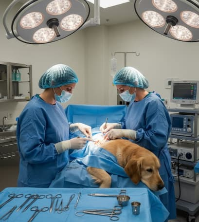
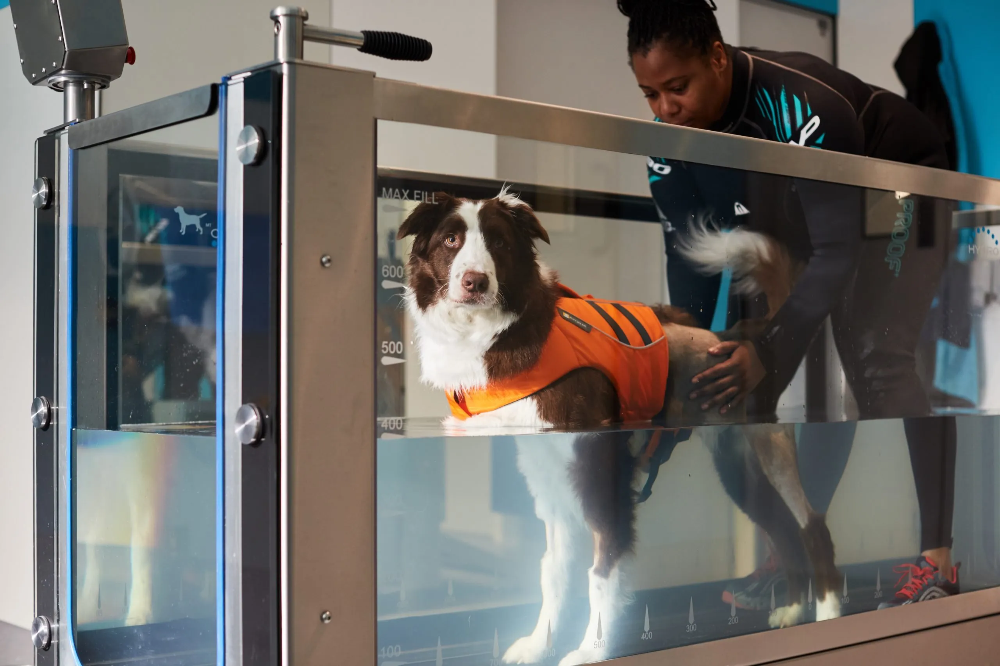
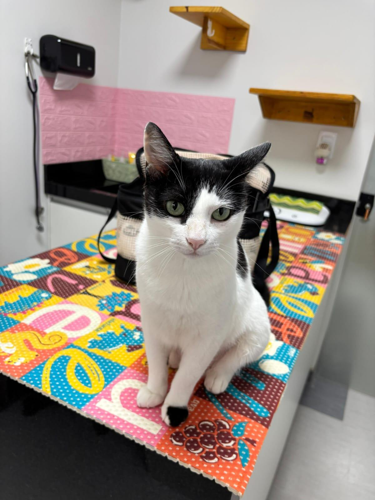
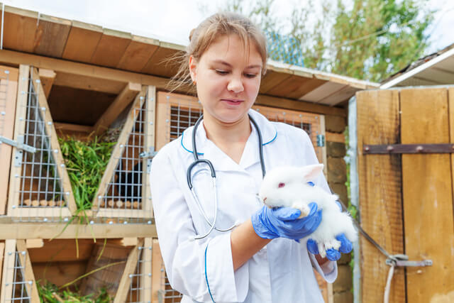
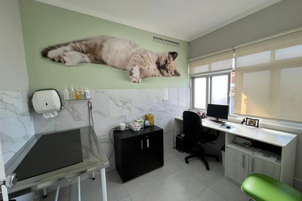
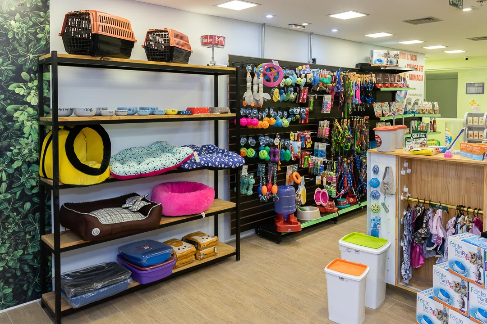
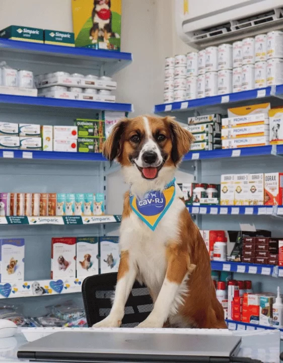

Na Clínica Veterinária Irina, acreditamos que cuidar de um animal de estimação é também cuidar de um membro da família. Assim como nós, cães, gatos e outros animais precisam de atenção, prevenção e acompanhamento para terem uma vida longa, saudável e feliz. Manter a saúde do seu animal em dia é fundamental. Consultas veterinárias periódicas ajudam a identificar possíveis problemas de saúde ainda no início, além de permitirem o acompanhamento do peso, alimentação, vacinação, higiene e bem-estar do seu pet. Também é importante oferecer uma alimentação adequada, manter as vacinas e a vermifugação em dia, cuidar da higiene e observar mudanças de comportamento. Pequenos sinais podem indicar que algo não está bem, e quanto antes o problema for identificado, maiores podem ser as chances de um tratamento adequado. Na Clínica Veterinária Irina, seu pet recebe cuidado, atenção e carinho em cada atendimento. Nosso objetivo é contribuir para que seu companheiro tenha mais qualidade de vida e possa estar ao seu lado por muitos e muitos anos. Porque seu pet merece cuidado, respeito e muito amor. Clínica Veterinária Irina — cuidando de quem faz parte da sua família.

Cirurgias

Fisioterapia

Esp. Felinos

Animais Silvestres

Clínica Geral
Urgência e Emergência

Pet-Shop 24h

Farmácia Vet 24h